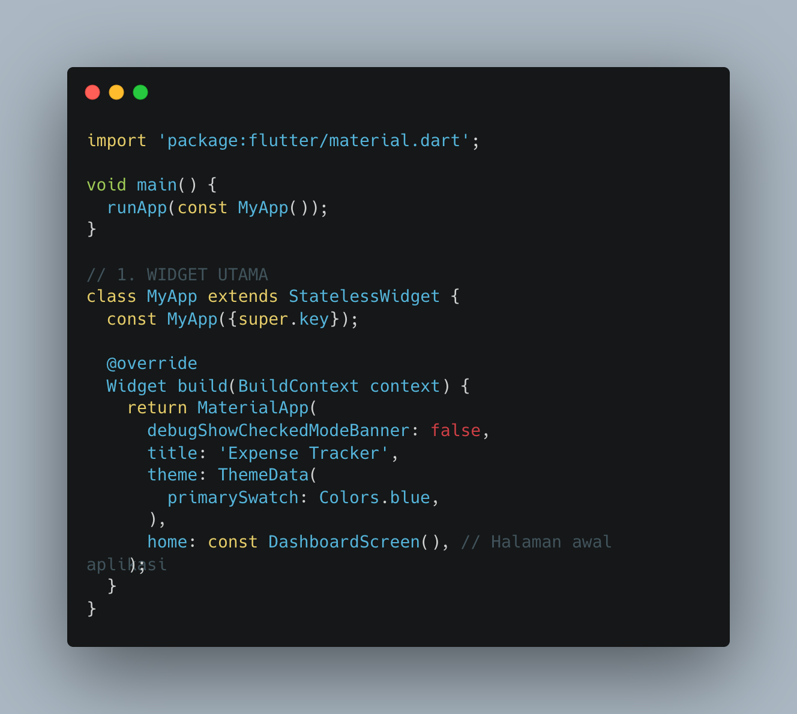
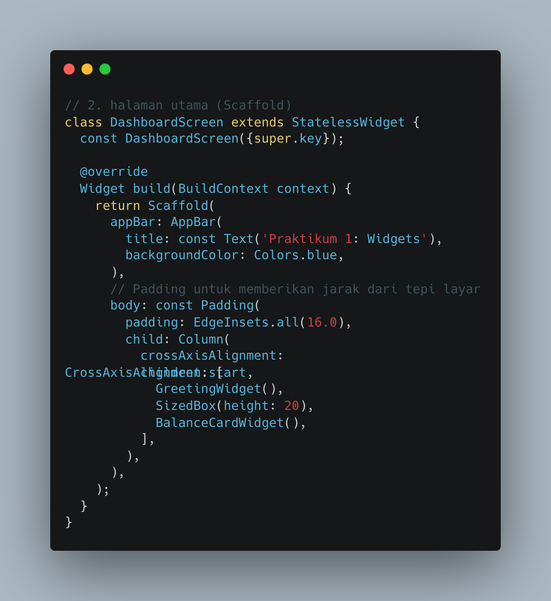
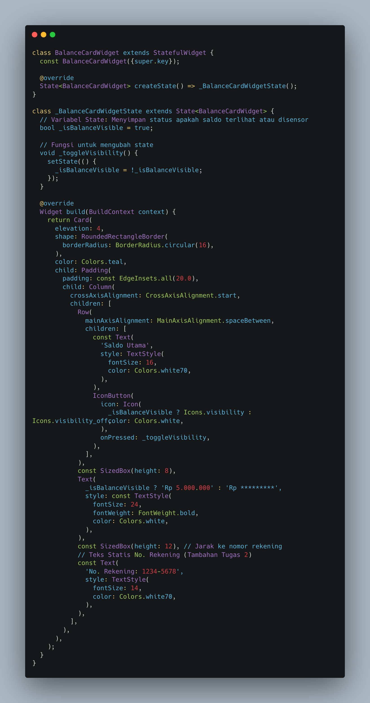
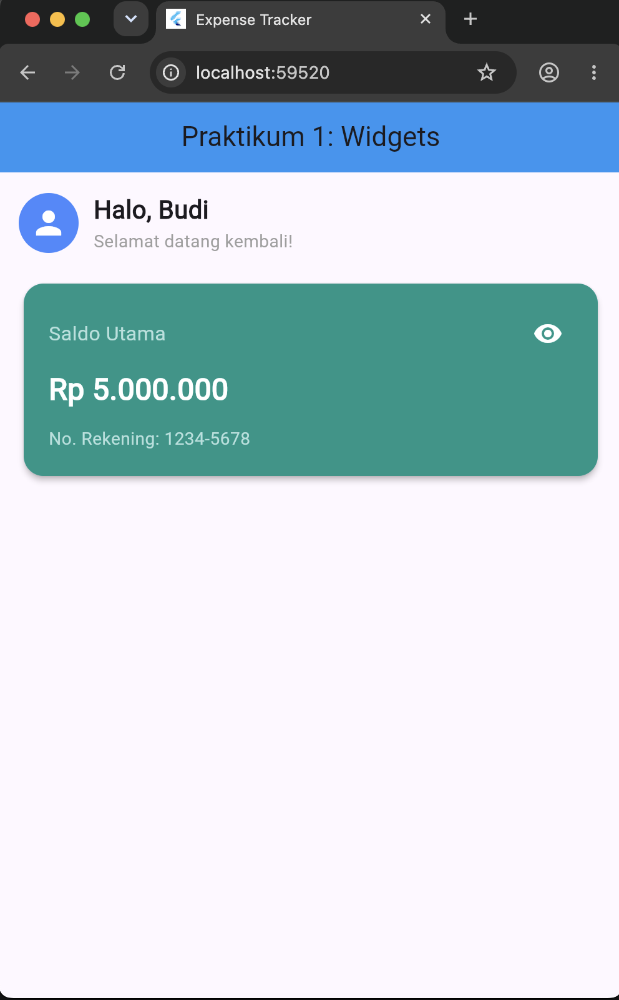
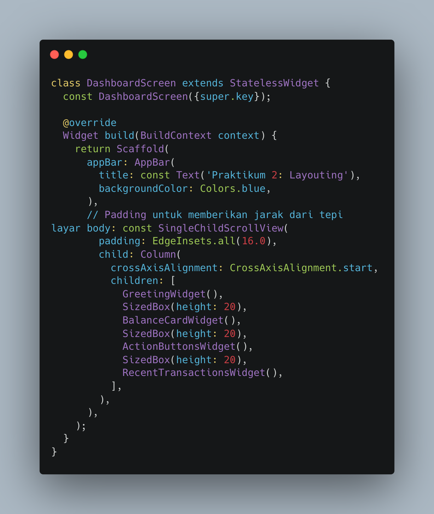
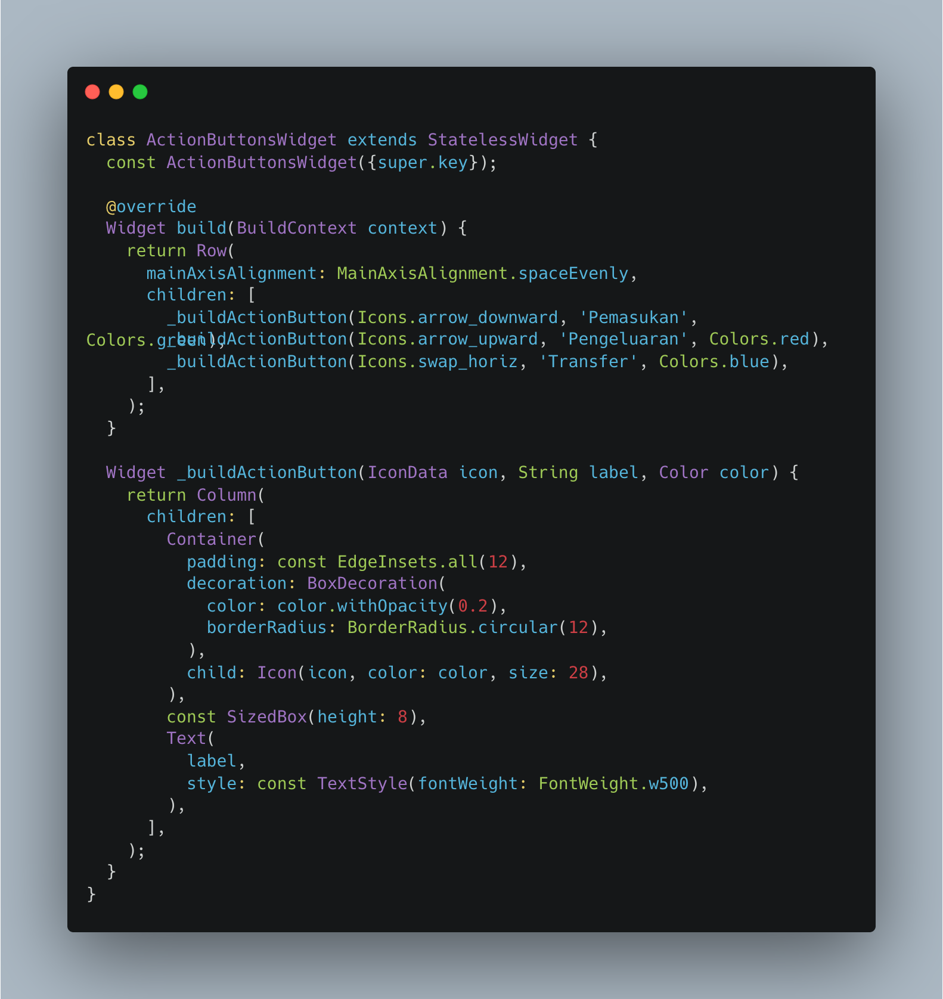
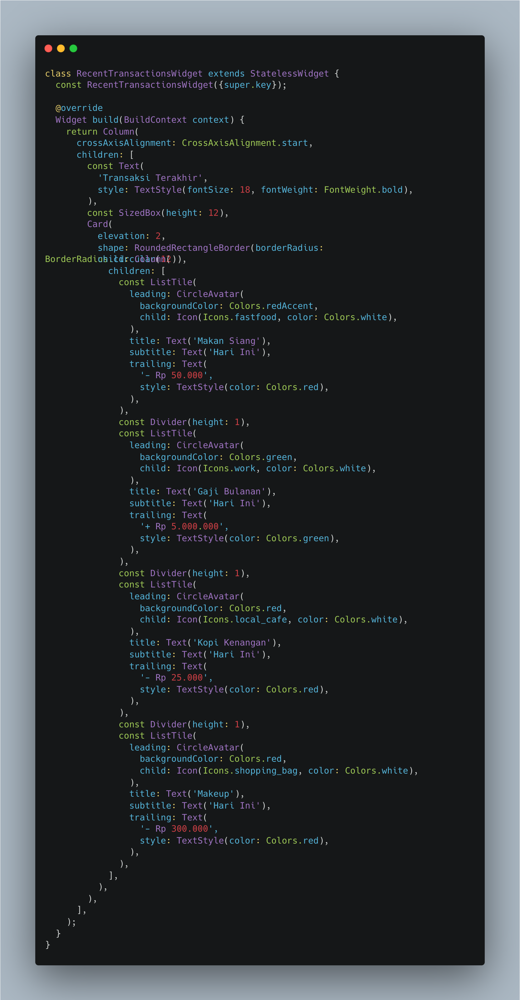
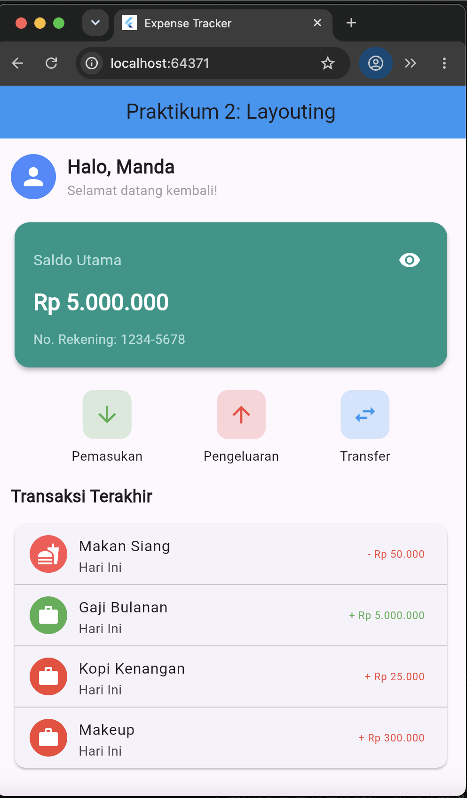

Modul I: Pengenalan Widgets (Stateless, StatefulWidget, & State Dasar)
A. Pendahuluan
Dalam ekosistem pengembangan aplikasi mobile menggunakan kerangka kerja Flutter, pemahaman mengenai struktur hierarki widget merupakan pondasi utama. Kerangka dasar aplikasi dibentuk melalui pemanfaatan komponen inti seperti MaterialApp sebagai konfigurasi global dan Scaffold sebagai penyedia struktur tata letak visual standar. Pengembang perlu memahami klasifikasi komponen antarmuka yang terbagi menjadi widget statis dan dinamis guna memastikan efisiensi performa serta responsivitas aplikasi terhadap interaksi pengguna.
Pengelolaan data internal menjadi pembeda utama antara komponen yang bersifat statis murni dengan komponen yang memerlukan pembaruan status secara berkala. Melalui pemanfaatan fungsi pengendali state seperti setState(), antarmuka aplikasi mampu merespons aksi masukan secara langsung tanpa perlu membangun ulang keseluruhan hierarki aplikasi dari awal. Praktikum ini mengarahkan pengembang untuk mempraktikkan secara langsung perbedaan perilaku antara widget statis dan dinamis dalam membangun elemen antarmuka fungsional.
B. Tujuan
- Memahami kerangka dasar aplikasi Flutter menggunakan
MaterialAppdanScaffold. - Membedakan penggunaan komponen
StatelessWidgetdanStatefulWidgetsecara tepat. - Menerapkan fungsi
setState()untuk menciptakan antarmuka aplikasi yang interaktif.
C. Langkah Kerja
Berikut adalah langkah-langkah dari implementasi kode program yang digunakan dalam praktikum modul pertama:
1. Inisialisasi Program Utama & Konfigurasi Global (main & MyApp)
Tahap awal dimuali dengan fungsi main() sebagai titik masuk (entry point) eksekusi program yang memanggil fungsi runApp() untuk menjalankan widget utama MyApp. Kelas MyApp diturunkan dari StatelessWidget yang mengonfigurasi kerangka MaterialApp secara global, menonaktifkan banner debug, mengatur tema warna utama aplikasi, serta menetapkan kelas DashboardScreen sebagai halaman awal penayangan antarmuka.

Snippet 1. Konfigurasi Fungsi Utama dan MyApp
2. Perancangan Halaman Utama (DashboardScreen & Scaffold)
Struktur tampilan layar utama dibangun melalui kelas DashboardScreen yang menggunakan komponen Scaffold. Di dalam elemen ini, terdapat bilah atas aplikasi (AppBar) bertuliskan judul praktikum serta bagian tubuh (body) yang membungkus komponen Padding dan Column. Wadah kolom ini berfungsi menata jarak serta menyusun komponen turunan secara vertikal, yang mencakup komponen sapaan pengguna dan kartu saldo.

Snippet 2. Struktur Tampilan DashboardScreen
3. Pembuatan Widget Sapaan (GreetingWidget)
Komponen sapaan pengguna dirancang menggunakan kelas turunan StatelessWidget karena sifatnya yang statis. Komponen ini memanfaatkan widget Row untuk menyusun elemen secara horizontal, yang memuat avatar lingkaran (CircleAvatar) untuk ikon profil dan komponen Column guna menyusun teks sapaan utama serta sub-teks secara vertikal dengan perataan sisi kiri yang rapi.

Snippet 3. Implementasi GreetingWidget
4. Pembuatan Kartu Saldo & Interaktivitas (BalanceCardWidget)
Komponen kartu saldo diimplementasikan menggunakan StatefulWidget karena membutuhkan pengelolaan status data internal yang dapat berubah. Kelas state pendukung memuat variabel boolean _isBalanceVisible serta fungsi pengendali _toggleVisibility() yang memanfaatkan metode setState() untuk membalik status visibilitas nominal saat tombol ikon mata ditekan[cite: 4]. Operator ternary digunakan pada teks nominal untuk menampilkan saldo asli atau menyensornya, serta disertakan teks informasi nomor rekening sebagai tambahan elemen tugas.

Snippet 4. Kartu Saldo dan Pengelolaan State
5. Pembahasan Tugas Modul 1
Pengerjaan latihan mencakup modifikasi warna latar belakang kartu saldo menjadi warna teal serta penambahan baris teks informasi nomor rekening (No. Rekening: 1234-5678) secara statis di bawah nominal saldo.

Gambar 1. Hasil Tampilan Antarmuka Modul 1
D. Kesimpulan
Modul pertama berhasil diselesaikan dengan baik melalui pemahaman runut dari struktur main hingga penerapan fungsi setState() pada komponen dinamis.
Modul II: Layouting & Styling (Row, Column, Container, & ListTile)
A. Pendahuluan
Pengembangan antarmuka aplikasi mobile yang kompleks memerlukan pengorganisasian tata letak elemen secara terstruktur. Modul kedua mengeksplorasi pemanfaatan widget penata letak utama seperti Row untuk penyusunan komponen secara horizontal dan Column untuk pengaturan elemen secara vertikal.
Pengelolaan wadah penampil data riwayat transaksi didukung melalui widget bawaan material design yaitu ListTile. Komponen ini menyediakan baris terstandarisasi untuk elemen ikon, teks informasi, hingga nominal transaksi.
B. Tujuan
- Menerapkan widget
Rowuntuk menata deretan tombol aksi secara horizontal. - Menerapkan widget
ColumndanListTileuntuk menyusun daftar transaksi. - Mengatur penataan jarak padding, margin, serta warna dekorasi komponen.
C. Langkah Kerja
Berikut adalah langkah-langkah dari implementasi kode program yang digunakan dalam praktikum modul kedua:
1. Integrasi Dashboard & Struktur Halaman
Serupa dengan modul sebelumnya, program diawali dengan fungsi eksekusi main() dan kelas MyApp. Pada kelas DashboardScreen, struktur tampilan diperluas dengan membungkus seluruh elemen di dalam widget SingleChildScrollView, Padding, dan Column agar tata letak bersifat fleksibel dan dapat digulir secara vertikal tanpa galat limpahan piksel (overflow).

Snippet 5. Integrasi Dashboard Scrollable Modul 2
2. Menyusun Tombol Aksi Cepat (ActionButtonsWidget)
Tombol aksi transaksi (pemasukan, pengeluaran, transfer) ditata horizontal menggunakan widget Row dengan properti MainAxisAlignment.spaceEvenly. Fungsi bantu modular _buildActionButton dipanggil untuk mendekorasi ikon di dalam Container bersudut melengkung.

Snippet 6. Implementasi Tombol Aksi Cepat (Row)
3. Menyusun Riwayat Transaksi (RecentTransactionsWidget)
Daftar riwayat transaksi disusun menggunakan struktur Column dan kerangka Card. Di dalamnya, komponen ListTile disusun berurutan dengan pemisah garis Divider, di mana atribut leading, title, subtitle, dan trailing diatur untuk menampilkan data riwayat transaksi secara informatif.

Snippet 7. Implementasi Riwayat Transaksi (ListTile)
4. Pembahasan Tugas Modul 2
Pengerjaan latihan meliputi penyesuaian styling pewarnaan teks nominal secara konsisten (merah untuk pengeluaran, hijau untuk pemasukan) serta penambahan item transaksi fiktif baru ke dalam daftar riwayat.

Gambar 2. Hasil Tampilan Antarmuka Modul 2
D. Kesimpulan
Praktikum modul kedua berhasil diselesaikan dengan menerapkan teknik penataan tata letak berbasis Row, Column, dan ListTile yang terintegrasi secara rapi pada aplikasi.